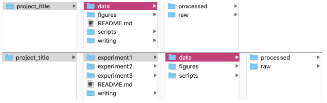

Pipeline Overview¶
An overview of the sequencing pipelines is shown below. Wild isolate data are processed by multiple pipelines. NIL/RIL sequence data are only processed by one pipeline.
Wild isolate sequencing¶

NIL or RIL sequencing¶

Andersen Lab Coding Best Practices¶
These best practices are just a few of the important coding tips and tricks for reproducible research. If you have more ideas, contact Katie!
General¶
- You should be doing most (if not all) of your analyses in
~/Dropbox/AndersenLab/LabFolders/YourName(except for QUEST, see below)- This is (1) to make sure the data is backed up/saved with version history and (2) to allow other lab members to access your code/scripts when necessary
- Do NOT use spaces in names of files or folders. Try not to use spaces in column names too (although sometimes it is necessary for a final table output)
- Computers often have a hard time reading spaces and code used to ignore spaces can vary from program to program
- Instead, you can use
_or.or-or capitalization (fileName.txt)
- NEVER replace raw data!!!!!
- You should save your raw data in the rawest format, write a script to analyze it, then if you wish, save the processed data for further use. This is important because it always allows you to go back to the original raw data in case something happens
- Some suggested project folder structure might look like something below: 
- Include a
README.md(orREADME.txt) file in each project folder to explain where the data and scripts can be found for certain analyses. Trust me, after a few years you will definitely forget…- And don’t forget to update the
READMEregularly, an oldREADMEdoesn’t do anyone good!
- And don’t forget to update the
- Either use full path names in scripts or be explicit about where the working directory is
- This is important to allow other people to run your code (or might even be helpful for you if you ever reorganize folders one day)
- Date your files, especially when you update an existing file. Write dates in
YYYYMMDDformat - As much as possible, ensure that your processed data is “tidy” (see below). This doesn’t work for all complex data types, but it should be a general norm to follow.
- Each variable must have its own column
- Each observation must have its own row
- Each value must have its own cell
- No color or highlighting
- No empty cells (fill with
NAif necessary) - Save data as plain text files (
.csv,.tsv,.txtetc. -- NOT.xls!!!)
R¶
- ALWAYS use namespaces before functions from packages (i.e.
dplyr::filter()instead offilter())- This includes
ggplot2and especiallydplyr!!! - Some packages have functions with the same name, so adding a namespace is crucial for reproducibility.
- Also, this helps other people read your code by knowing which functions came from which packages
- This includes
- When piping with Tidyverse (
%>%), press<Enter>to go to the next line after a pipe- This makes your code more readable
- In fact, general practices state no more than 80-100 characters per line of code EVER to increase readability
QUEST¶
- You should be doing most (if not all) of your analyses in
/projects/b1059/projects/yourName(not your home directory (i.e./home/netid))
Important
Main exception: Nextflow temporary working directories should NOT be on b1059 (it will fill us up!) but rather in the scratch space b1042 (files get automatically deleted here every 30 days).
A correctly designed nextflow.config file will take care of this.
Python¶
[ Needs filling in from someone who uses python :) ]